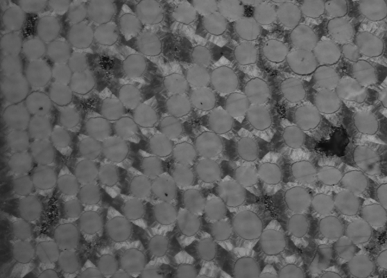
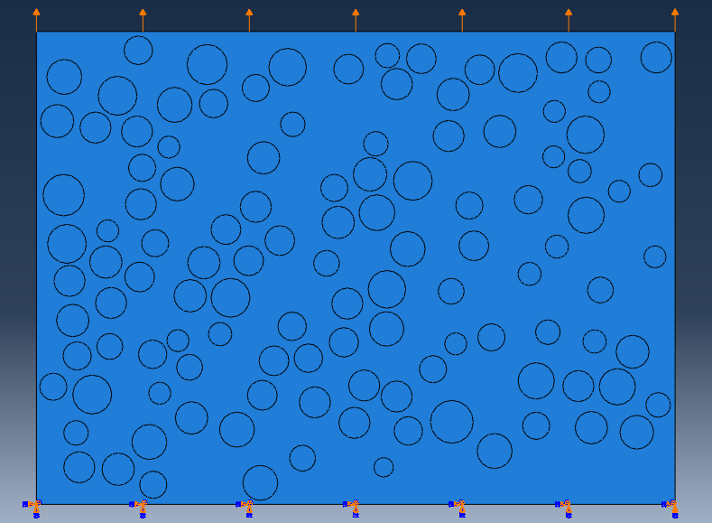
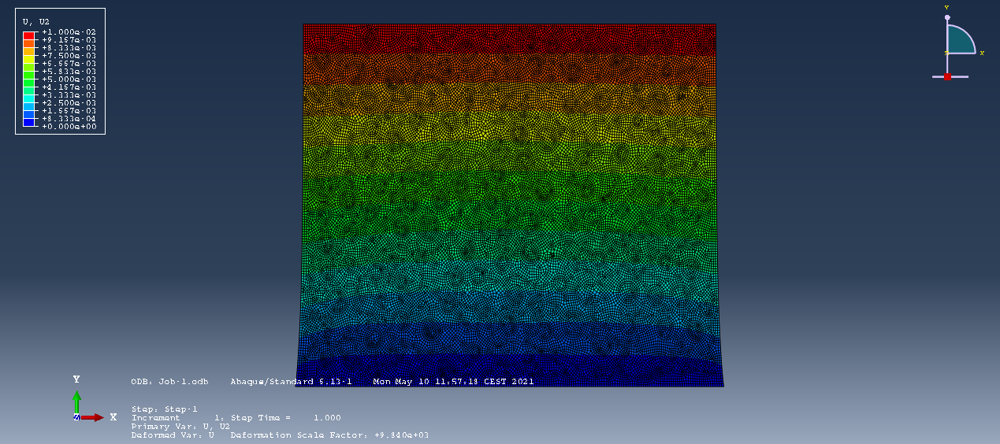

PROJECT
Composite Material Modeling from 2D Microscopy Images
ENSEIRB-MATMECA (Bordeaux INP) | Academic Group Project (TER) | 6 people

alt="Microscope Image of Composite Material">Project Overview
Built a full pipeline to reconstruct the mechanical behavior of a carbon-carbon composite (a sample from an Ariane 6 divergent) directly from 2D microscope images. The pipeline: an image-processing stage in C++ (Canny edge detection, contour cleanup, circular Hough transform) to locate and approximate the carbon fibers as circles; a meshing stage using Gmsh to generate a triangular mesh distinguishing fiber and matrix regions; and a custom linear-elasticity finite element solver written in C++ (with a comparison of iterative linear solvers — Conjugate Gradient, GMRES, FOM, etc.) to run virtual tensile tests. Results (apparent Young's moduli E1, E2 and shear modulus G12) were cross-validated against Abaqus and against the rule-of-mixtures estimate, all falling within a few percent of each other and consistent with expected fiber/matrix bounds.

